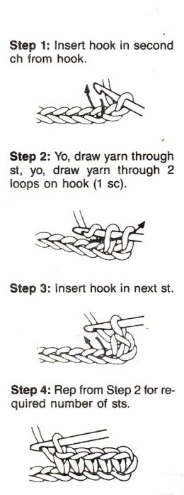

Christine ('Tine) Onayemi
Web Developer in progress via Dev Bootcamp

Classy Crash Course
Ruby Classes as Real-World Objects
Sunday, May 10, 2015
Greetings, dear readers. As many of you know, I'm learning Ruby, one of many programming languages. Ruby is an object-oriented language, which doesn't mean much if you don't know what an object is in terms of programming. So let's talk about it. An object is just a thing. Any thing. Objects are the nouns of a programming language. A method is what objects do; methods are the verbs. Just like a person walks or a bird flies, an object does a method. It is important to note that not all objects can perform all methods. For instance, a person cannot fly (at least not without the assistance of some other object), but a bird can. So how does a program keep track of which objects can perform which methods? Enter: the class.
A class creates objects, which we call instances of that class. Each time we create a new object, we say that it is instantiated; this is the most important function of the class. The class also contains the definitions of the methods these objects can perform. Let's look at an example of some real-world objects and describe how they would behave if they were objects of a class. In case you don't know yet, I love to crochet. So for now, we will focus on crochet hooks as our objects.
In Ruby, our classes are capitalized. So let us call our example the Hook class. This class should contain all of the methods a crochet hook needs to be able to carry out. So let's talk about what a crochet hook does. Perhaps we want to be able to write a program that can make a blanket. The hook will need to be able to fasten on, complete various types of stiches, and fasten off. That doesn't sound too bad. But how can we differentiate between the various types of stitches? We will need to introduce some instance variables. Each stitch (st) is made up of a series of inserts, yarn_overs (yo), and draw_throughs. These will be our instance variables, which can change in value depending on which stitch method we are using. For example, the single_crochet method would require one insert, one yarn_over, one draw_through, another yarn_over, and then two draw_throughs (see the image below).
Our
single_crochet method must contain all of these instructions in order for the program to carry out the task. It will be important that these variables stay inside of the method; we don't want them to be manipulatable by anything outside of our Hook class. Once our blanket is made, no one should be able to alter the number of loops in a stitch or the number of stitches that have been made. (For the sake of our metaphor, let's pretend that there's no such thing as scissors or creatively destructive children).
Once we have all of our methods defined in the class, we are ready to create objects and ask them to carry out methods. So let's work on making our blanket! First things first: in order to create a new hook object, we type the following:
hook = Hook.newhook. From there, we can ask our hook object to carry out any of the methods defined in the Hook class. Let's say the blanket pattern calls for 20 single crochet stitches in a row. We would need to perform our single_crochet method 20 times:
20.times do hook.single_crochetendAll this with a single
hook object performing its pre-defined methods.